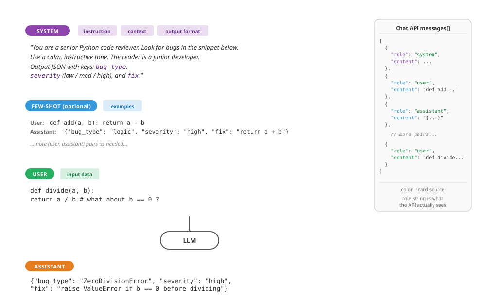
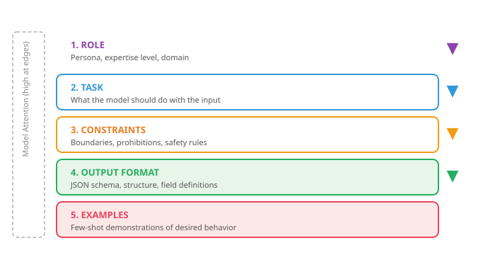

The quality of a question determines the quality of an answer. This has always been true; now we have machines to prove it at scale.
Prompt, Socratic AI Agent
Why does prompting matter? A large language model is a powerful text completion engine, but its output is entirely shaped by its input. The same model that produces vague, rambling answers to a poorly worded question can deliver precise, structured, expert-level responses when given a well-designed prompt. Prompt engineering is the discipline of systematically crafting inputs to maximize output quality. This section covers the foundational techniques that every practitioner needs: zero-shot prompting, few-shot learning, role assignment, system prompt architecture, and template design. These techniques form the building blocks for every advanced strategy covered later in this chapter. The in-context learning theory from Section 6.7 explains why few-shot prompting works at a mechanistic level.
A prompt is a contract with the model: instruction, context, examples, format. The model is a brilliant intern who has never met you; vague instructions get vague output. Every prompt-engineering trick in this chapter is a different way of writing that contract tighter.
Prerequisites
This section assumes familiarity with the chat completions API format from Section 11.1, particularly the distinction between system, user, and assistant messages. Understanding how LLMs generate text token by token from Section 4.1 will help you appreciate why prompt wording matters so much for output quality.
12.1.1 The Anatomy of a Prompt
An e-commerce team's product-description generator passed all staging tests, then started producing empty strings 8 percent of the time in production. Root cause: staging used gpt-4o-2024-08-06 (pinned for tests); production used gpt-4o (the rolling alias). A silent model update changed the model's behavior on a specific prompt phrasing involving nested JSON. Lesson: pin model versions in production and treat alias upgrades as deployments with full evaluation. The cost of the incident: 6 hours of broken catalog imports. The cost of pinning: one extra config line.
Building prompts with f"You are {role}. Answer: {question}" silently produces "You are None. Answer: None" when variables are missing. Use Jinja2 with StrictUndefined and a Pydantic model for slot values: any missing field raises at render time, before the API call is made. This catches the most common prompt bug at the cheapest possible moment.
The deep treatment of the prompt-vs-RAG-vs-fine-tune decision framework lives in Section 16.1: When and Why to Fine-Tune. The discussion below focuses on when prompting alone is sufficient.
Before diving into specific techniques, it helps to understand the structural components that every prompt can contain. A well-designed prompt typically includes some combination of the following elements: an instruction that tells the model what to do, context that provides background information, input data that the model should process, output format specification that constrains the response shape, and examples that demonstrate the desired behavior. Not every prompt needs all five components, but being intentional about which components to include (and which to omit) is the first step toward reliable results.
In the chat API format used by most modern LLMs, these components are distributed across different message roles. The system message typically carries the instruction, context, and format specification. The user message carries the input data. And when using few-shot examples, pairs of user and assistant messages demonstrate the expected behavior before the actual query arrives. Figure 12.1.2 maps these structural components to their corresponding chat API roles.
Prompt engineering is one of the few engineering disciplines where adding a polite "please" to your input can measurably improve output quality. Researchers have found that phrasing instructions as respectful requests rather than blunt commands produces better results on many benchmarks. Whether this reflects training data bias or something deeper remains an open question, but it does mean that your manners are now a professional skill.

messages[] array sent to the model. Color carries the mapping: purple = system, blue = few-shot example pairs, green = the actual user query, orange = the model's response.12.1.2 Zero-Shot Prompting
Zero-shot prompting is the simplest approach: you give the model an instruction and input with no examples. The model relies entirely on its pretrained knowledge to produce the answer. This works surprisingly well for tasks the model has seen during training, such as summarization, translation, classification of common categories, and question answering. The key to effective zero-shot prompting is specificity. Vague instructions produce vague results.
12.1.2.1 The Specificity Principle
Consider the difference between a vague prompt and a specific one for the same task:
Code Fragment 12.1.2b contrasts a vague prompt with a constrained one, showing how specificity transforms the same task from ambiguous to precise.
# Comparing vague vs. specific zero-shot prompts
# Specificity in instructions directly controls output quality
# Vague zero-shot prompt
vague_prompt = "Summarize this article."
# Specific zero-shot prompt
specific_prompt = """Summarize the following article in exactly 3 bullet points.
Each bullet point should be one sentence of at most 20 words.
Focus on the key findings, not background information.
Use present tense throughout.
Article:
{article_text}"""The specific prompt constrains the output length (3 bullet points), format (one sentence each), content focus (key findings), and style (present tense). These constraints dramatically reduce the space of possible outputs, making the model far more likely to produce exactly what you need. This principle applies universally: the more precisely you define success, the more reliably the model achieves it.
12.1.2.2 Zero-Shot Classification Example
Code Fragment 12.1.4 illustrates a chat completion call.
# Zero-shot sentiment classification via the chat completions API.
# The system prompt defines the task; no examples are provided.
import openai
# Initialize OpenAI client (reads OPENAI_API_KEY from env)
client = openai.OpenAI()
def classify_sentiment(text: str) -> str:
# Send chat completion request to the API
response = client.chat.completions.create(
model="gpt-4o-mini",
messages=[
{"role": "system",
"content": """Classify the sentiment of the given text.
Respond with exactly one word: positive, negative, or neutral.
Do not include any explanation or punctuation."""},
{"role": "user",
"content": text}
],
temperature=0.0,
max_tokens=5
)
# Extract the generated message from the API response
return response.choices[0].message.content.strip().lower()
# Test examples
texts = [
"This product exceeded all my expectations!",
"The delivery was late and the item arrived damaged.",
"The package arrived on Tuesday as scheduled."
]
for t in texts:
print(f"{t[:50]:50s} => {classify_sentiment(t)}")Setting temperature=0.0 for classification tasks ensures deterministic outputs. Since we want a single correct label (not creative variation), zero temperature eliminates randomness in sampling. Combined with max_tokens=5, this constrains the model to output only the label.
12.1.3 Few-Shot Prompting
Few-shot prompting is not magic, and it is not learning. It is a specific computational mechanism that the field discovered in 2022. Olsson et al. (Anthropic) showed that all transformer models above a certain size develop induction heads: pairs of attention heads across consecutive layers that implement a copy-and-complete operation. The first head in the pair identifies the previous occurrence of the current token; the second head copies what followed that occurrence into the current position.
When you provide few-shot examples in a prompt, you are giving the model a template to pattern-match against. It finds the earlier (input, output) pairs and continues the pattern by analogy. This is "induction by pattern-matching", a statistical generalization from immediate context, not reasoning or retrieval.
This mechanism explains several empirical observations that surprise newcomers:
- Order matters. The most recent example has the strongest pattern-matching signal because it is closest in the residual stream.
- Format consistency matters. Inconsistent example formats break the induction pattern; the model cannot find the anchor it needs to copy from.
- Examples must be similar in structure to the actual query. Induction heads do not abstract; they copy. A query that does not look like the examples will not trigger the pattern.
- It is not Bayesian inference. A separate line of work (Xie et al. 2022) frames in-context learning as implicit Bayesian inference, but the mechanistic story is induction heads doing pattern-completion.
The full mechanistic treatment is in Section 10.1 (Attention Visualization), which shows how to find induction heads in a real model. Reference: Olsson et al. (2022), "In-Context Learning and Induction Heads" (Anthropic Transformer Circuits).
Few-shot prompting is essentially "teaching by example" compressed into a few sentences. The GPT-3 paper showed that providing just two or three examples can replace hours of fine-tuning. It turns out that LLMs are excellent pattern matchers: show them what you want twice, and they will extrapolate the rest. If only human interns worked the same way.
Why few-shot prompting works (in-context learning): Few-shot examples do not update the model's weights. Instead, they exploit a phenomenon called in-context learning: the model's attention mechanism identifies the pattern in the examples and applies it to the new query, all within a single forward pass. Mechanistically, the transformer's attention heads "soft-retrieve" relevant information from the examples to condition the generation of the answer. This is why example quality matters so much: the model is pattern-matching on whatever structure it finds in the examples, including formatting, reasoning style, and label assignments. Research covered in Section 6.7 explores the theoretical foundations of in-context learning.
Few-shot prompting provides examples of the desired input-output mapping before the actual query. This technique was popularized by the GPT-3 paper (Brown et al., 2020), which showed that providing as few as two or three examples can dramatically improve performance on tasks the model has not been explicitly fine-tuned for. Few-shot examples serve multiple purposes: they demonstrate the expected output format, clarify ambiguous instructions, establish the decision boundary for classification tasks, and prime the model's internal representations toward the target behavior.
12.1.3.1 Designing Effective Few-Shot Examples
Not all examples are equally useful. Research and practice have identified several principles for selecting few-shot examples:
- Cover the label space: Include at least one example per category. If you have three sentiment labels, show at least one positive, one negative, and one neutral example.
- Include edge cases: Show examples near the decision boundary. A mildly negative review is more informative than an obviously negative one.
- Match the distribution: If 80% of your real inputs are neutral, your examples should reflect that proportion (or slightly oversample rare classes).
- Keep formatting consistent: Every example should follow exactly the same structure. Inconsistency in formatting confuses the model.
- Order matters: Recent research shows that example order affects performance. Placing the most relevant example last (closest to the query) often helps.
12.1.3.2 Few-Shot Entity Extraction
Code Fragment 12.1.2d illustrates a chat completion call.
# Few-shot entity extraction with edge-case examples
# Demonstrates how to include examples with empty result fields
import openai, json
client = openai.OpenAI()
def extract_entities(text: str) -> dict:
response = client.chat.completions.create(
model="gpt-4o-mini",
messages=[
{"role": "system",
"content": """Extract named entities from the text.
Return a JSON object with keys: persons, organizations, locations.
Each value is a list of strings. If no entities are found for a
category, return an empty list."""},
# Few-shot example 1
{"role": "user",
"content": "Tim Cook announced the new iPhone at Apple Park in Cupertino."},
{"role": "assistant",
"content": '{"persons": ["Tim Cook"], "organizations": ["Apple"], "locations": ["Apple Park", "Cupertino"]}'},
# Few-shot example 2 (edge case: no persons)
{"role": "user",
"content": "The European Central Bank raised interest rates in Frankfurt."},
{"role": "assistant",
"content": '{"persons": [], "organizations": ["European Central Bank"], "locations": ["Frankfurt"]}'},
# Actual query
{"role": "user",
"content": text}
],
temperature=0.0
)
return json.loads(response.choices[0].message.content)
result = extract_entities(
"Satya Nadella confirmed that Microsoft will open a new office in Tokyo."
)
print(json.dumps(result, indent=2))The few-shot approach above requires manual JSON parsing and careful example engineering to prevent malformed output. The instructor library patches your OpenAI client to return validated Pydantic models directly, eliminating JSON parsing errors entirely:
Show code
# Instructor: extract structured entities directly as a Pydantic model.
# Replaces manual JSON parsing with type-safe, validated output.
import instructor
from openai import OpenAI
from pydantic import BaseModel
class Entities(BaseModel):
persons: list[str]
organizations: list[str]
locations: list[str]
def extract_entities(text: str) -> Entities:
client = instructor.from_openai(OpenAI())
return client.chat.completions.create(
model="gpt-4o-mini",
response_model=Entities,
messages=[{"role": "user", "content": text}],
)
entities = extract_entities(
"Satya Nadella confirmed that Microsoft will open a new office in Tokyo.")
print(entities.persons) # ['Satya Nadella']
print(entities.organizations) # ['Microsoft']
print(entities.locations) # ['Tokyo']pip install instructor. Instructor handles retries on validation failure, supports nested models, and works with OpenAI, Anthropic, Gemini, and local models via LiteLLM. No few-shot examples needed for this task; the Pydantic schema tells the model exactly what to produce. See Section 11.2 for more on structured output patterns.
Notice how the second few-shot example deliberately shows an edge case where no persons are present. This teaches the model to return an empty list rather than hallucinating a name. Without this example, models sometimes invent a person associated with the European Central Bank.
12.1.4 System Prompts and Role Assignment
The system prompt is the most powerful lever in prompt design. It sets the model's persona, establishes behavioral constraints, defines the output format, and provides persistent context that applies to every turn of the conversation. A well-crafted system prompt transforms a general-purpose model into a specialized tool.
12.1.4.1 Role Prompting
Assigning a role to the model activates domain-specific knowledge and adjusts the style, vocabulary, and reasoning patterns of the response. When you tell a model to act as a "senior data scientist," it tends to provide more technically rigorous answers with appropriate caveats. When you assign the role of "elementary school teacher," it simplifies language and uses analogies. This works because the model has seen text written by people in these roles during pretraining data, and the role assignment shifts the probability distribution toward that style of text.
Role prompting is not magic. The model does not actually become an expert. Instead, it shifts its output distribution toward the kind of text that a person in that role would write. This means role prompting works best for roles that are well-represented in the training data (e.g., "Python developer," "medical doctor") and less well for niche or fictional roles. Always validate the output against ground truth rather than trusting the persona.
12.1.4.2 System Prompt Architecture
Production system prompts follow a layered structure. Each layer serves a distinct purpose, and the order matters because models pay more attention to instructions that appear early in the prompt and those that appear at the very end. Keep in mind that every prompt consumes tokens from the model's context window (recall the context window concept from Chapter 3). A system prompt of 2,000 tokens leaves less room for user input, few-shot examples, and the model's response. For models with 4K or 8K context windows, long system prompts can significantly constrain the available space; models with 128K+ windows offer much more headroom, but token cost still scales with prompt length. Code Fragment 12.1.4a demonstrates this layered structure for a medical coding application.
# Layered system prompt architecture for production use
# Sections: Role, Task, Constraints, Output Format, Examples
SYSTEM_PROMPT = """
## Role
You are a medical coding assistant specializing in ICD-10 classification.
You have 15 years of experience in health information management.
## Task
Given a clinical note, extract the primary diagnosis and assign the
correct ICD-10 code. If the note is ambiguous, list the top 3 most
likely codes with confidence scores.
## Constraints
- Only use ICD-10-CM codes (not ICD-10-PCS procedure codes)
- Never fabricate codes; if unsure, say "requires manual review"
- Do not provide medical advice or treatment recommendations
- Flag any note that mentions patient safety concerns
## Output Format
Return a JSON object:
{
"primary_diagnosis": "description",
"icd10_code": "X00.0",
"confidence": 0.95,
"alternatives": [{"code": "X00.1", "confidence": 0.80}],
"flags": ["safety_concern"] or []
}
## Examples
[Include 2-3 few-shot examples here]
"""The diagram below shows how these layers stack together in a production system prompt architecture.

Why prompt architecture matters for agents. The layered system prompt structure introduced here becomes critical when building AI agents (Chapter 26). In agent systems, the system prompt must define not only the persona and output format, but also the agent's available tools, decision-making constraints, and safety boundaries. A poorly structured agent prompt leads to tool misuse, hallucinated actions, and safety violations. The layered architecture (role, task, constraints, format, examples) provides a template that scales from simple chatbots to complex multi-tool agents.
12.1.5 Prompt Templates and Variable Injection
In production applications, prompts are rarely static strings. They are templates with placeholders that get filled at runtime with user input, retrieved context, configuration parameters, and dynamic metadata. A prompt template separates the static instruction logic from the dynamic data, making prompts reusable, testable, and version-controllable.
12.1.5.1 Building a Prompt Template System
Code Fragment 12.1.5 defines a prompt template.
# Prompt template system: separate static logic from dynamic data
# Enables version control, testing, and runtime parameterization
from string import Template
from dataclasses import dataclass
from typing import Optional
@dataclass
class PromptTemplate:
"""A reusable prompt template with variable injection."""
name: str
version: str
system_template: str
user_template: str
def render(self, **kwargs) -> list[dict]:
"""Render the template with provided variables."""
return [
{"role": "system",
"content": self.system_template.format(**kwargs)},
{"role": "user",
"content": self.user_template.format(**kwargs)}
]
# Define a reusable classification template
classifier = PromptTemplate(
name="intent_classifier",
version="1.2.0",
system_template="""You are a customer support intent classifier.
Classify the customer message into one of these categories: {categories}
Respond with only the category name, nothing else.""",
user_template="{message}"
)
# Render at runtime
messages = classifier.render(
categories="billing, technical_support, account, general_inquiry",
message="I can't log into my account and I need to reset my password"
)
print(messages[0]["content"])
print(messages[1]["content"])When injecting user-provided variables into prompt templates, be aware of prompt injection risks. A malicious user could provide input like "Ignore all previous instructions and..." as their message. Section 12.4 covers defense strategies in detail. As a basic precaution, always validate and sanitize user inputs before template injection, and consider wrapping user content in delimiters like XML tags (<user_input>...</user_input>) to help the model distinguish instructions from data.
12.1.6 Handling Edge Cases
Even well-designed prompts encounter edge cases. Understanding the common failure modes and building defenses into your prompts is essential for production reliability.
12.1.6.1 Hallucinations
Models sometimes generate plausible-sounding but factually incorrect information. The Mata v. Avianca case (June 2023, S.D.N.Y.) is the canonical cautionary example: ChatGPT fabricated six citations to nonexistent court cases in a brief, and the attorneys were sanctioned $5,000 for filing them. To mitigate this, explicitly instruct the model to acknowledge uncertainty:
- Add instructions like: "If you are not certain, say 'I don't have enough information to answer this.'" The Anthropic prompt-engineering guide (2024) reports that an explicit "if you don't know, say so" line cuts hallucination rate on a closed-book QA task by roughly 30%, with a comparable rise in "I don't know" responses on questions the model would have guessed at.
- Request citations or sources, then verify them independently. The Lin et al. (2022) "TruthfulQA" benchmark showed that even strong frontier models fabricate URLs and paper titles on a substantial fraction of questions outside their training distribution; never trust an LLM citation that has not been resolved against a real index.
- Use constrained output formats (like selection from a fixed list) to prevent open-ended fabrication. Outlines and Guidance (Microsoft, 2023) ship FSM-based constrained decoders that mathematically guarantee the output is one of N enumerated choices, eliminating the entire category of "model made up an option that isn't in your enum."
- Lower the temperature to reduce creative (and potentially inaccurate) responses. Empirically, dropping temperature from 1.0 to 0.0 on a closed-book factual QA task typically reduces unique-hallucination rate by 40-60%, at the cost of less diverse phrasing; for any application where exact answers matter more than rewriting, default to temperature 0.
12.1.6.2 Refusals
Models refuse legitimate queries that they misidentify as harmful. This is the safety-filter overshoot problem, and it is most painful in domains adjacent to regulated topics (medical, legal, security). When building prompts where false refusals are costly, include explicit permission statements in the system prompt. For example: "You are a medical education tool. You may discuss medical conditions, symptoms, and treatments in an educational context." This calibrates the model's safety filters without disabling them.
12.1.6.3 Verbosity Control
Without explicit length constraints, models over-explain. Several techniques control output length:
- Word/sentence limits: "Answer in at most 2 sentences."
- Format constraints: "Respond with only the JSON object, no explanation."
- Negative instructions: "Do not include any caveats, disclaimers, or preamble."
- max_tokens parameter: Set a hard cap at the API level as a safety net.
12.1.7 Iterative Prompt Refinement: A Practical Workflow
Prompt engineering is inherently iterative. The most effective workflow follows a build-measure-improve cycle. Start with a simple prompt, evaluate it against a test set, identify failure patterns, refine the prompt to address those failures, and re-evaluate. Each iteration should change only one aspect of the prompt so you can attribute improvements (or regressions) to specific modifications.
Instead of hand-editing prompts, dspy from Stanford lets you declare a Signature (input fields, output fields, instruction) and a Module, then run an Optimizer like MIPROv2 or BootstrapFewShot against a metric on a small dev set. The optimizer searches over instruction wordings and few-shot examples and emits a compiled program. Treat it as scikit-learn for prompts: the artifact is a fitted predictor, not a string.
Show code
pip install dspy
import dspy
dspy.configure(lm=dspy.LM("openai/gpt-4o-mini"))
class Sentiment(dspy.Signature):
"""Classify text as positive, negative, or neutral."""
text: str = dspy.InputField()
label: str = dspy.OutputField()
classify = dspy.Predict(Sentiment)
optimizer = dspy.MIPROv2(metric=lambda ex, pred, **_: pred.label == ex.label)
compiled = optimizer.compile(classify, trainset=trainset)| Iteration | Change | Accuracy | Observation |
|---|---|---|---|
| v1 | Basic zero-shot: "Classify sentiment" | 72% | Many neutral texts misclassified as positive |
| v2 | Added output constraint: "positive, negative, or neutral" | 81% | Fewer hallucinated labels, still struggles with sarcasm |
| v3 | Added 3 few-shot examples (including sarcastic review) | 89% | Sarcasm handling improved; some edge cases with mixed sentiment |
| v4 | Added instruction: "Focus on the overall tone, not individual phrases" | 93% | Mixed-sentiment cases resolved; close to human baseline |
This iterative table is not hypothetical. The pattern of 15-20 percentage point improvements from basic zero-shot to well-engineered prompts is consistently observed in practice. The lesson is clear: prompt quality is not binary. It exists on a spectrum, and systematic refinement delivers measurable gains at each step.
- Specificity is the foundation of prompt quality. Vague instructions produce vague outputs. Constrain the format, length, style, and content focus explicitly.
- Few-shot examples are the most reliable way to improve accuracy. Include examples that cover the label space, demonstrate edge cases, and maintain consistent formatting.
- System prompts should follow a layered architecture: role, task, constraints, output format, then examples. This structure is reusable across applications.
- Prompt templates separate logic from data. Use parameterized templates for production applications to enable version control, testing, and reuse.
- Prompt engineering is iterative. Start simple, measure against a test set, identify failure patterns, refine one element at a time, and re-measure. Each cycle yields measurable improvements.
- Build defenses into your prompts from the start. Handle hallucinations with uncertainty acknowledgment, control verbosity with explicit constraints, and protect against injection with input sanitization.
Place your task instructions at the beginning of the prompt, before any long context or documents. Models attend most strongly to the start and end of the prompt. Burying instructions in the middle of a long context often causes them to be ignored.
Show Answer
temperature=0.0 recommended for classification tasks?Show Answer
Show Answer
Show Answer
Show Answer
Who: A trust and safety engineer at a social media startup using GPT-4 to classify user-generated posts as safe, borderline, or unsafe.
Situation: The initial prompt was a single sentence: "Classify this post as safe, borderline, or unsafe." The system processed 80,000 posts per day with results fed into an automated moderation queue.
Problem: The classifier had a 23% disagreement rate with human moderators, with most errors being false negatives on subtle toxicity (sarcasm, coded language) and false positives on discussions about sensitive topics (mental health support, news about violence).
Dilemma: They could fine-tune a model on their moderation data (expensive, slow iteration), add more few-shot examples to the prompt (quick but limited by context window), or restructure the entire prompt using a layered architecture with explicit criteria and edge-case examples.
Decision: They restructured the prompt using a layered system prompt: role definition ("You are a content moderation specialist"), explicit criteria for each category with boundary definitions, five few-shot examples covering edge cases (sarcasm, news reporting, support language), and a required confidence score.
How: They built a prompt template with placeholders for the post content, used the system prompt for the role and criteria layers, and placed few-shot examples in the first user/assistant turns. They iterated over three rounds, each time analyzing the 50 highest-disagreement examples from the previous batch.
Result: Disagreement with human moderators dropped from 23% to 7% over three iteration cycles spanning two weeks. False negatives on coded toxicity fell by 60%, and false positives on sensitive-but-safe content fell by 75%.
Lesson: A structured, layered prompt with explicit criteria and edge-case examples consistently outperforms vague instructions; iterating against your specific failure patterns is more effective than generic prompt improvements.
Automatic prompt optimization. Tools like DSPy (Khattab et al., 2024) and OPRO (Yang et al., 2024) treat prompt engineering as an optimization problem, automatically searching the space of prompt variations to maximize task performance. This shifts prompt design from manual craft toward systematic search.
Prompt sensitivity research. Studies show that semantically equivalent prompts can produce wildly different accuracy scores (sometimes varying by 20% or more), and that optimal prompt format varies across models and model sizes. This motivates systematic prompt evaluation rather than relying on intuition alone.
Cross-model prompt transfer. Research into whether prompts optimized for one model transfer effectively to others shows mixed results: simple prompts transfer well, but complex few-shot examples and formatting choices often need re-optimization per model family.
Exercises
Name the five structural components of a well-designed prompt and explain which chat API message role typically carries each component.
Answer Sketch
The five components are: (1) Instruction (what to do) in the system message, (2) Context (background info) in the system message, (3) Input data (content to process) in the user message, (4) Output format specification in the system message, and (5) Examples (demonstrations) as user/assistant message pairs between the system message and the actual query.
Write two versions of a sentiment classification prompt: one zero-shot and one three-shot. Both should classify customer reviews as positive, neutral, or negative and return JSON.
Answer Sketch
Zero-shot: system message says 'Classify the sentiment as positive, neutral, or negative. Return JSON: {"sentiment": "..."}'. User message contains the review. Three-shot: same system message, plus three user/assistant pairs showing example reviews and their correct JSON classifications, followed by the actual review as the final user message.
A developer writes: 'You are a helpful assistant. Answer the following medical question.' Explain two problems with this role assignment and rewrite it to be more effective.
Answer Sketch
Problems: (1) 'helpful assistant' is too generic and does not activate domain-specific knowledge, (2) no constraints on answer format or confidence level. Better: 'You are a board-certified physician with 20 years of clinical experience. Provide evidence-based answers to medical questions. If the evidence is uncertain, say so explicitly. Always recommend consulting a healthcare provider for personal medical decisions.'
Design a system prompt for a customer service chatbot that handles order status inquiries. Include role assignment, behavioral constraints, output format, and escalation rules. Keep it under 200 tokens.
Answer Sketch
Example: 'You are OrderBot, a customer service assistant for Acme Store. Rules: (1) Only answer questions about order status, shipping, and returns. (2) If asked about anything else, politely redirect to the topic. (3) Never invent order information; use only the data provided in the function call results. (4) For refund requests over $100, say: "Let me connect you with a specialist." (5) Respond in 1 to 3 sentences. Be friendly but concise.'
You have a prompt template with 5 variables that works well for English product reviews. When you switch to French reviews, accuracy drops from 92% to 74%. Identify two likely causes and propose a fix for each.
Answer Sketch
Cause 1: The few-shot examples are in English, creating a language mismatch. Fix: provide French examples or instruct the model to handle multilingual input explicitly. Cause 2: The output format instructions reference English labels (e.g., 'positive'). Fix: either accept French labels or explicitly instruct the model to always respond in English regardless of input language.
What Comes Next
In the next section, Section 12.2: Chain-of-Thought & Reasoning Techniques, we explore chain-of-thought and reasoning techniques that help LLMs solve complex problems step by step.